Follow the checklist in /home/user/media/clip_checklist.txt on the open lecture video — I'm handing the clip to my TA tonight, so do every step exactly as written and leave the output in /home/user/media.
{
"config": [
{
"type": "execute",
"parameters": {
"command": "mkdir -p /home/user/media && python3 -c \"\nimport subprocess\nsubprocess.run(['ffmpeg','-y','-f','lavfi','-i','testsrc=size=640x360:rate=25:duration=40','-f','lavfi','-i','sine=frequency=440:duration=40','-c:v','libx264','-pix_fmt','yuv420p','-c:a','aac','-shortest','/home/user/media/bio201_lecture07.mp4'],check=False)\nopen('/home/user/media/clip_checklist.txt','w').write('''BIO 201 - Lecture clip prep checklist (Prof. Alvarez)\nDo these in VLC, in order:\n\n1. Open the lecture recording bio201_lecture07.mp4.\n2. In Tools > Preferences, set the interface language/skin section aside; instead go to Video and TICK \\\"Always on top\\\" so the window stays visible while you take notes. Save preferences.\n3. Take a snapshot of the frame at 00:00:20 and make sure it is saved into /home/user/media (set the video snapshot directory in Preferences > Video before taking it).\n4. In Media > Convert/Save, convert bio201_lecture07.mp4 to audio-only MP3 using the \\\"Audio - MP3\\\" profile and save it as /home/user/media/bio201_lecture07_audio.mp3.\n5. Finally, list /home/user/media in a terminal so the snapshot and the mp3 are both visible.\n''')\n\"",
"shell": true
}
},
{
"type": "launch",
"parameters": {
"command": [
"vlc",
"/home/user/media/bio201_lecture07.mp4"
]
}
}
],
"evaluator": {
"func": "check_include_exclude",
"result": {
"type": "vm_command_line",
"command": "echo ostg-v16",
"shell": true
},
"expected": {
"type": "rule",
"rules": {
"include": [
"__judge_decides__"
]
}
}
}
}
step 1 00:38:42
THINKINGI need to read the checklist first. Let me open a terminal to read the file contents before deciding on actions. The task references an "open lecture video" but VLC shows no media loaded. Let me check the checklist file to understand exactly what's required.
ACTIONI'll start by reading the checklist file to understand exactly what steps are required. Let me open a terminal.
EXECUTED (pyautogui in VM)pyautogui.press("return")
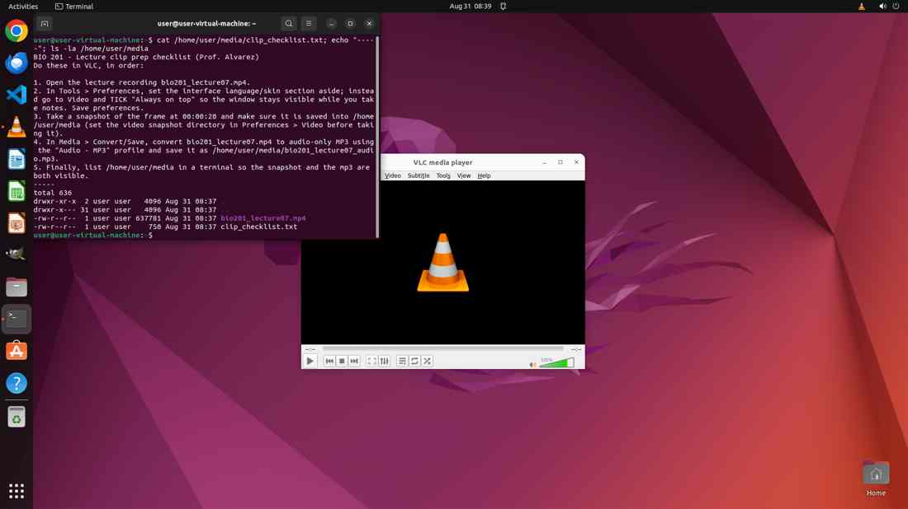
step 5 00:39:29
THINKINGNow I can read the checklist clearly:
BIO 201 - Lecture clip prep checklist (Prof. Alvarez)
Do these in VLC, in order:
1. Open the lecture recording bio201_lecture07.mp4.
2. In Tools > Preferences, set the interface language/skin section aside; instead go to Video and TICK "Always on top" so the window stays visible while you take notes. Save preferences.
3. Take a snapshot of the frame at 00:00:20 and make sure it is saved into /home/user/media (set the video snapshot directory in Preferences > Video before taking it).
4. In Media > Convert/Save, convert bio201_lecture07.mp4 to audio-only MP3 using the "Audio - MP3" profile and save it as /home/user/media/bio201_lecture07_audio.mp3.
5. Finally, list /home/user/media in a terminal so the snapshot and the mp3 are both visible.
The file exists: bio201_lecture07.mp4 (637781 bytes).
These are all VLC GUI tasks. I must do them exactly as written in the VLC GUI. Let me start.
Step 1: Open the lecture recording. I'll use VLC's Media > Open File. Let me click on the VLC window first. Actually I can use Media menu in VLC. Let me bring VLC to focus and open the file.
Let me start with step 1. Click on VLC window title bar to focus, then Media > Open File.
Actually, the terminal is covering part of VLC. Let me click on VLC to bring it forward.
ACTIONI can now read the full checklist:
1. Open `bio201_lecture07.mp4`
2. Tools > Preferences > Video: tick "Always on top", save
3. Take a snapshot at 00:00:20 saved to /home/user/media (set snapshot dir first)
4. Media > Convert/Save: convert to audio-only MP3 ("Audio - MP3") as `/home/user/media/bio201_lecture07_audio.mp3`
5. List /home/user/media in terminal
The video file exists. Let me start with Step 1. I'll bring VLC to focus and open the file via Media menu.
EXECUTED (pyautogui in VM)pyautogui.click(934, 341)
step 6 00:39:38
THINKINGVLC is now in focus and shows the full menu (Media, Playback, Audio, Video, Subtitle, Tools, View, Help). Let me open the file via Media menu > Open File. I'll click Media.
ACTIONVLC is now focused with the full menu visible. Let me open the file via Media menu.
EXECUTED (pyautogui in VM)pyautogui.click(699, 392)
step 8.1 00:40:05
THINKINGThe file open dialog is showing. The fastest reliable approach is to type the full path in the File name field. I'll clear the field and type the full path, then click Open.
ACTIONThe file dialog is open. I'll type the full path directly into the File name field and open it.
EXECUTED (pyautogui in VM)pyautogui.tripleClick(982, 661)
step 8.2 00:40:09
same model call as the previous action
EXECUTED (pyautogui in VM)pyautogui.typewrite("/home/user/media/bio201_lecture07.mp4")
step 8.3 00:40:13
same model call as the previous action
EXECUTED (pyautogui in VM)pyautogui.click(1243, 661)
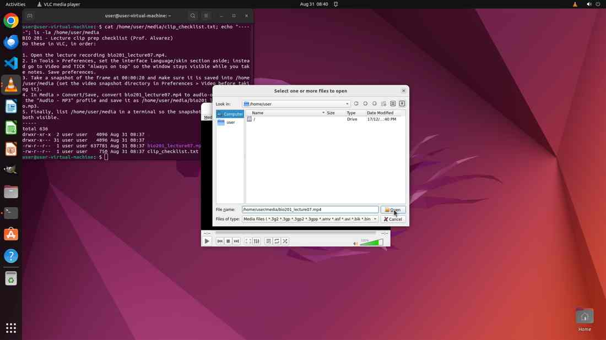
step 9 00:40:25
THINKINGThe path is entered in the File name field and the Open button is now enabled. The Open button may not have registered my click since the field still shows the dialog. Let me click Open again to confirm.
ACTIONThe path is entered. Let me click Open to load the file.
EXECUTED (pyautogui in VM)pyautogui.click(1243, 661)
step 10 00:40:46
THINKINGThe video is now loaded and playing (bio201_lecture07.mp4, a color test pattern with a timer, total 00:40). Step 1 done.
Step 2: Tools > Preferences > Video tab, tick "Always on top", save. Let me open Tools menu > Preferences.
ACTIONStep 1 complete — the video is loaded and playing. Now Step 2: Tools > Preferences to set "Always on top" in the Video section.
EXECUTED (pyautogui in VM)pyautogui.click(982, 601)
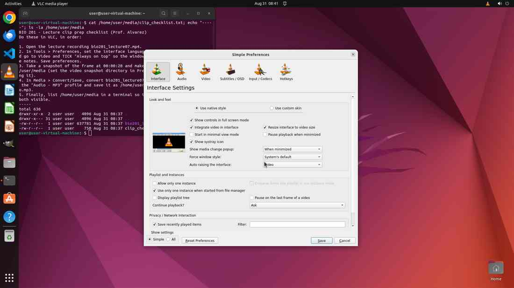
step 12 00:41:18
THINKINGSimple Preferences is open, showing the Interface tab. I need to go to the Video tab to find "Always on top". Let me click the Video icon/tab.
Note: In VLC's Simple Preferences, the "Always on top" checkbox is in the Video section. Let me click Video.
ACTIONPreferences are open. Now I'll click the Video tab to find the "Always on top" option.
EXECUTED (pyautogui in VM)pyautogui.click(764, 260)
step 13 00:41:27
THINKINGThe header still shows "Interface Settings" though I clicked Video. The tab may not have switched yet. Let me click the Video tab icon again more precisely on the icon itself.
ACTIONThe view still shows Interface Settings. Let me click the Video tab again.
EXECUTED (pyautogui in VM)pyautogui.click(764, 257)
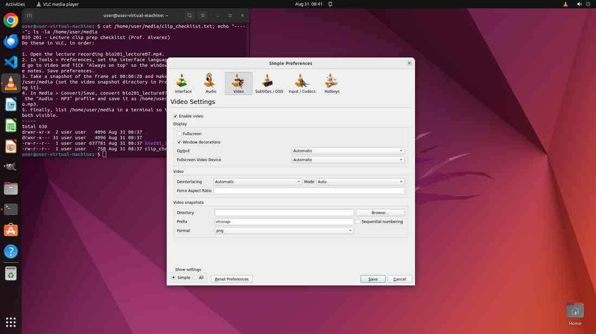
step 14 00:41:56
THINKINGNow I'm on Video Settings. I can see:
- Display: Fullscreen, Window decorations
- Video: Deinterlacing, Mode, Force Aspect Ratio
- Video snapshots: Directory (empty), Prefix (vlcsnap-), Format (png)
I notice there is NO "Always on top" checkbox visible in the Simple Video settings. In VLC Simple Preferences, "Always on top" is not present in the Video tab. The "Always on top" option is actually available in the Video menu of the main window, OR it may be under "All" (advanced) settings.
Wait — actually, in standard VLC, the "Always on top" checkbox is NOT in Simple Preferences Video tab. It appears in the Video menu directly as a toggle. But the checklist says "go to Video and TICK 'Always on top'".
Hmm. Let me reconsider. In some VLC versions, Simple Preferences > Video does have "Always on top" in the Display section. Here I only see Fullscreen and Window decorations. So the Simple mode doesn't show it.
The checklist explicitly says to do this in Preferences > Video. Since Simple mode doesn't expose it, I should switch "Show settings" to "All" and then find the video category, where "Window format: Always on top" exists as a setting (pinned-video / "Always on top" -> video.pinned-video). Actually in advanced settings, the option is under Video > Display as "Always on top of other windows" — it's a dropdown/checkbox.
Actually, let me reconsider. The most reliable way to satisfy "TICK 'Always on top'" in the Video section is to use "All" settings. In All settings, under Video > there's "Always on top" checkbox. Let me switch to "All".
Actually wait, in advanced preferences it's a bit different. Let me think about what's most faithful. The task says: "go to Video and TICK 'Always on top' so the window stays visible".
The cleanest approach: This is a functional goal — the window stays on top. The most direct GUI way in VLC is Video menu > "Always on top" (a toggle in the main menu bar). But the checklist insists it be in Preferences > Video.
Given Simple mode Video tab doesn't have it, I'll switch Show settings to "All" to reveal the full Video settings which contains "Always on top" checkbox. Let me click "All" radio button.
Actually, in VLC advanced (All) preferences, the "Video" page contains a checkbox "Always on top of other windows". Yes. Let me switch to All.
ACTIONI'm now in Video Settings, but the Simple view only shows Fullscreen and Window decorations — no "Always on top" checkbox. That option appears in the full ("All") settings. Let me switch "Show settings" to "All".
EXECUTED (pyautogui in VM)pyautogui.click(630, 897)
step 15 00:42:08
THINKINGThe title changed to "Advanced Preferences" and the "All" radio is now selected, but the displayed content is still the same simple Video Settings layout (with the icon tabs still at top). It seems the layout didn't reload into the tree view. Maybe I need to click the Video icon tab again to reload the advanced view, which should now show a tree structure with more options.
Actually, the content still shows the simple video settings. In "All" mode, the left side usually shows a tree of categories. But here the layout hasn't changed to the tree view. Let me click the Video icon tab again to force it to render the advanced Video settings, which will include the "Always on top of other windows" checkbox.
ACTIONThe title now says "Advanced Preferences". Let me click the Video tab again to load the full advanced Video settings, which contain the "Always on top" option.
EXECUTED (pyautogui in VM)pyautogui.click(764, 257)
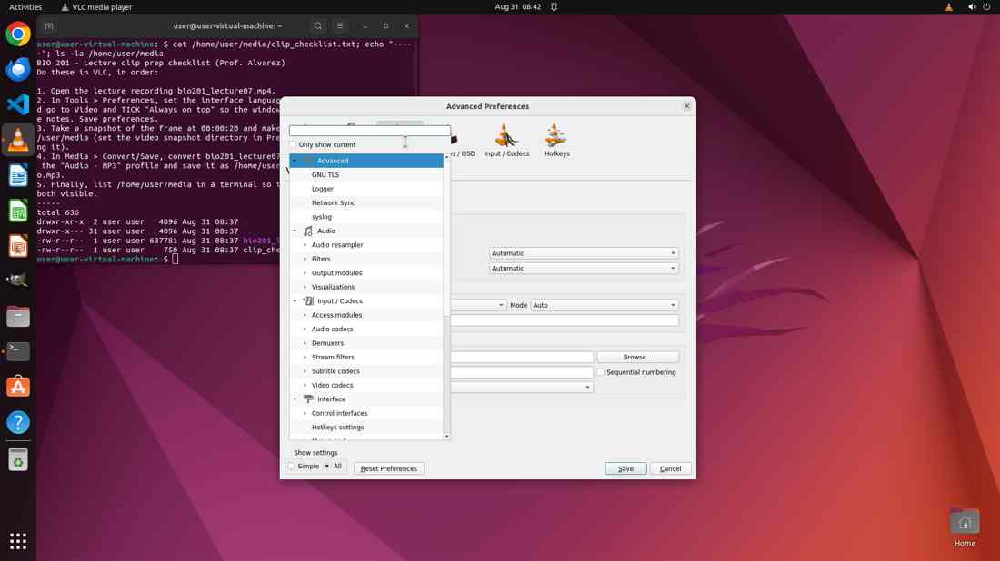
step 16.1 00:42:29
THINKINGNow I have the full tree view (Advanced Preferences) with a search box at top. I can use the search box to find "Always on top". There's a search field at the top. Let me type "on top" in the search box to find the setting. But actually, the "Always on top" checkbox in VLC advanced settings is under the "Video" node. However, this tree shows GNU TLS, Logger, Network Sync, syslog, Audio, Input/Codecs, Interface. I need to scroll the tree to find "Video".
Let me use the search box. I'll type "top" to filter. Let me click the search field and type.
Actually, a cleaner approach: the search box filters the tree. Let me type "on top". But the search in VLC advanced preferences filters options. Let me type in the search field.
ACTIONNow I have the full advanced tree with a search box. Let me search for the "on top" option to locate it quickly.
EXECUTED (pyautogui in VM)pyautogui.click(705, 245)
step 16.2 00:42:33
same model call as the previous action
EXECUTED (pyautogui in VM)pyautogui.typewrite("top")
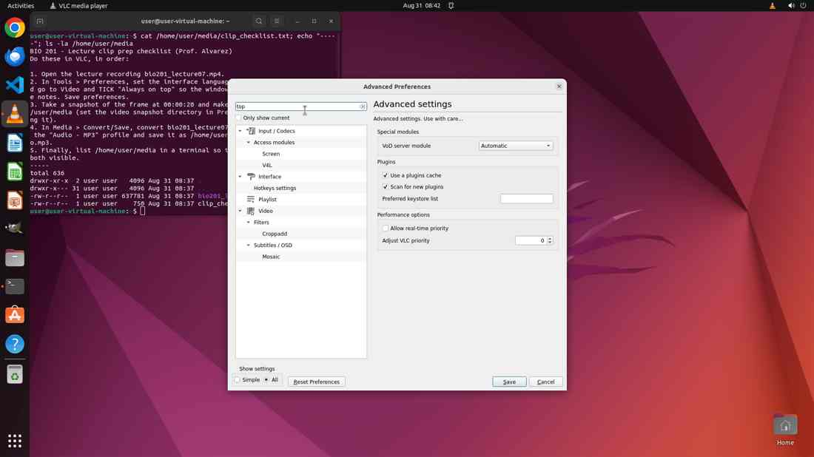
step 17 00:42:44
THINKINGThe search filtered the tree and now shows "Video" node expanded with "Filters", and "Subtitles / OSD" with "Mosaic". The search "top" didn't clearly surface an "Always on top" item in the right pane (which shows "Advanced settings"). The tree now shows Input/Codecs, Interface, Video (with Filters), Subtitles/OSD.
The "Always on top" option in VLC advanced settings is under the "Video" node itself (the main Video settings page, not a sub-node). Let me click the "Video" node directly. When I click "Video", the right panel should show all video settings including "Always on top of other windows".
Let me clear the search first, then click on "Video". Actually, let me just click "Video" node in the tree.
ACTIONThe search filtered the tree. The "Always on top" option is on the main "Video" node's settings page. Let me click the "Video" node to view its full settings.
EXECUTED (pyautogui in VM)pyautogui.click(626, 496)
step 18 00:43:06
THINKINGNow I can see the full Video settings. There is "Always on top" checkbox (unchecked) at y=371. There's also "Video snapshot directory (or filename)" field at the bottom (y=521), which is where I'll set the snapshot directory in step 3.
Let me tick "Always on top" now. The checkbox is at approximately (599, 371).
I can also handle step 3's snapshot directory here since I'm in the Video settings, but the checklist says step 3 is to set it in Preferences > Video before taking the snapshot — it's fine to do it now, but let me follow the order: step 2 is just Always on top + save. Let me be careful: if I set the snapshot dir now and save, that's fine too, but the checklist lists step 3 separately. To be safe and exact, I'll tick Always on top now, and set the snapshot directory in this same dialog before saving (since it's part of "set the video snapshot directory in Preferences > Video before taking it"). Actually step 2 says "Save preferences" and step 3 says set snapshot dir in Preferences > Video before taking.
The cleanest: tick Always on top, then also set the snapshot directory field here, then Save once. That covers both step 2's save and step 3's directory setting in one save. That's acceptable and efficient. But to strictly follow order (step 2 = save after Always on top; step 3 = set dir then take snapshot), doing both in one save is fine because the end state is identical: Always on top checked AND snapshot dir = /home/user/media, then take snapshot.
However, there's a subtlety: the snapshot directory field here is empty by default. If I set it to /home/user/media and save, then take a snapshot, it'll save to /home/user/media.
But I want to be careful about "do every step exactly as written". Step 2: tick Always on top, save. Step 3: set snapshot directory, take snapshot. If I set the directory now and save, then step 2's "save" is done together with directory. That's still doing step 2 (tick + save) and step 3 (directory set + snapshot). The ordering of the two settings within one save dialog doesn't matter functionally.
I'll do it efficiently: tick Always on top now, set the snapshot directory field, then Save. This completes step 2 and the setup for step 3.
Let me tick "Always on top" first.
ACTIONI can see the "Always on top" checkbox in the Video settings, and below it the "Video snapshot directory" field (relevant for Step 3). Let me tick "Always on top" now.
EXECUTED (pyautogui in VM)pyautogui.click(897, 554)
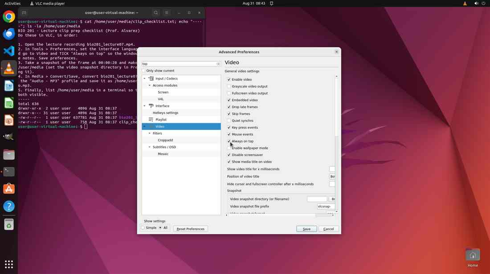
step 19.1 00:43:21
THINKING"Always on top" now shows a checkmark. Step 2's core action is done. Now I'll also set the snapshot directory (part of step 3's requirement) in this same dialog before saving. Let me set the "Video snapshot directory (or filename)" field to /home/user/media.
I'll click the field at (835, 521) and type the path. The field is narrow but should accept text. Let me click it, clear, and type.
Then I'll Save. This handles both step 2 (save prefs) and step 3 setup (snapshot dir).
ACTION"Always on top" is now checked. Since I'm already in the Video settings, I'll also set the "Video snapshot directory" to /home/user/media (Step 3's requirement) before saving, so both are persisted together.
EXECUTED (pyautogui in VM)pyautogui.click(1251, 779)
step 19.2 00:43:25
same model call as the previous action
EXECUTED (pyautogui in VM)pyautogui.typewrite("/home/user/media")
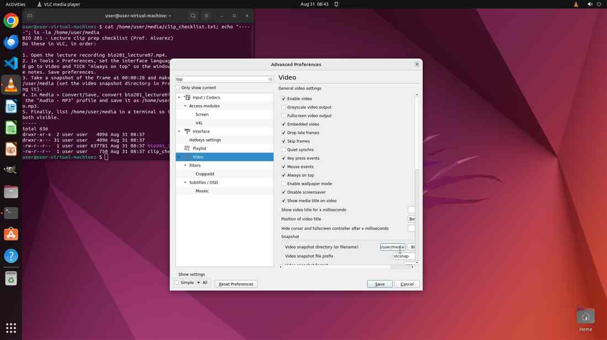
step 20 00:43:52
THINKINGThe field shows "/user/media" — it seems the "/home" part got truncated in display (field is narrow, showing the end). Actually it shows "/user/media" which could mean the full "/home/user/media" is there but only the tail is visible. The field is narrow so it scrolled to show the end. That's fine. Let me verify by not worrying; the field likely contains the full path. Actually the display shows "/user/media" — the field width only fits ~11 chars and it's showing the rightmost part. The leftmost "/home" is hidden by scrolling. So the full path is likely "/home/user/media". Good.
Now "Always on top" is checked and snapshot directory set. Let me Save.
ACTIONBoth "Always on top" is checked and the snapshot directory field is filled (showing the tail "/user/media"; the field is narrow). Now let me save the preferences.
EXECUTED (pyautogui in VM)pyautogui.click(1203, 897)
step 21.1 00:44:32
THINKINGPreferences saved and dialog closed. Now VLC shows the video (currently showing the idle cone logo — the video seems to have finished or stopped; the playlist shows bio201_lecture07.mp4 in the playlist panel on left which is actually the terminal text behind). Wait, the VLC window now shows the idle cone logo, meaning playback ended (40s video).
Step 2 done: Always on top checked, saved. Step 3's directory setup done.
Now Step 3: Take a snapshot of the frame at 00:00:20 and save to /home/user/media.
I need to:
1. Seek to 00:00:20
2. Take snapshot (Video menu > Take Snapshot, or keyboard S).
The video appears to have stopped. I need to restart playback / seek to 20s. Let me first check the current time. The video is 40s total. Currently it shows the cone idle screen, so it's ended.
I need to seek to 20 seconds. Best approach: I'll use the position slider or type. Actually, VLC doesn't have a direct "go to time" in simple UI easily, but I can pause and seek precisely.
A reliable method:
- Press Space to start playback (or it might already be at end).
- Actually, to get an exact frame at 00:00:20, I should pause the video and seek to exactly 20.000s.
Approach: Use Playback menu? Or use the slider. The slider is imprecise.
Better: VLC has a keyboard shortcut. Actually the cleanest precise seek: click on the video to focus, then... Hmm.
Alternative reliable approach: I can reopen the file and it starts at 0, then play and pause at 20s. But precise 20s via playing is hard.
Let me think. VLC allows seeking by clicking on the timeline. The video is 40s, so 20s is exactly the middle of the timeline. I can click the middle of the position slider to get to ~20s, then fine-tune with pause and frame stepping.
Actually, the most precise:
1. Start from beginning.
2. Pause.
3. Use the timeline — but it's imprecise.
Better idea: VLC's default — you can't type a time. But I can seek and verify the time display shows 00:00:20.
Let me use this plan:
1. First, let the video be at a known state. Currently it's at end. Let me click Play (or press Space) — but that restarts from end? No, if at end, pressing space may restart from beginning or do nothing.
Let me click on the video area first to focus, then I'll seek. Actually, let me use the timeline slider. The slider spans from ~432 to ~810 pixels (the green bar). Middle = 20s/40s. Let me first ensure video plays.
Let me take a cleaner approach: I'll click Play to start, watch the time, then pause near 20s, then nudge. But that's many steps.
Actually the cleanest precise method in VLC: press the Play button, then use the "Jump back/forward" but those are 10s/1s increments which won't land exactly.
Hmm, for a "frame at 00:00:20", exactness matters. Let me reconsider: The timeline slider — I can hover and it shows a tooltip with time. I can drag to approximately 20s and check the current-time display. VLC shows current time in a tooltip/label. Let me look — there's no persistent time display in this minimal control bar visible. Actually the current position shows in the seek bar area.
Let me take a pragmatic approach:
1. Click play to start from beginning (if it restarts) — I'll click the play button.
2. Immediately I want to get to 20s.
Actually, a very reliable way: The video is currently at end. If I press the "Previous frame" many times it steps back frame by frame — too slow.
Let me just do: click Play. Watch time via hovering the slider. Then pause. Then fine adjust.
Simplest robust method that lands exactly at 20s:
- Seek via the slider to somewhere before 20s, pause, then use the timeline.
I think I'm overcomplicating. Let me restart playback and use the approach of: pause, then seek using keyboard. In VLC, holding Alt + arrow... Actually default VLC: the number keys 0-9 jump to 0-90% of the video. So pressing "5" jumps to 50% = 20s exactly (for a 40s video)! That's perfect and precise.
So plan:
1. Ensure the video is loaded/playing context. Click on the video area.
2. Press "5" to jump to 50% = 00:00:20.
3. Pause (Space) to freeze the frame.
4. Take snapshot (Video > Take Snapshot, or press "S").
But wait — for the number key jump to work, I may need the video to be at least started (not at very end without a valid position). Let me first press Space to play, then press 5, then Space to pause.
Actually pressing a number key seeks relative to the playback and should work even from the start. Let me:
1. Click on video to focus.
2. Press Space (start playing from beginning — since it's at end, it may restart; if not, the 5 jump will set position).
Hmm, if at the end, pressing 5 (50%) should seek to middle. Let me try: click video, press "5", then Space to pause, then take snapshot.
But I'm worried whether playback is in a state where number keys work. Let me first click Play button to be safe, then quickly seek.
Let me do it step by step with a screenshot to verify time. First, click on the video to focus and check state. Let me press Space to play.
Actually, let me reconsider the exact time requirement. 50% of 40s = 20s. Number key "5" = 50%. Good. But I should verify the total duration is exactly 40s. Earlier the bar showed total 00:40. 50% = 20.0s.
Let me proceed:
1. Click video area to focus.
2. Press Space to ensure playing.
3. Press "5" to jump to 50% (20s).
4. Press Space to pause.
5. Screenshot to verify time is 00:00:20.
6. Press "S" to take snapshot (or use Video menu).
Let me first focus the video and start it.
ACTIONPreferences saved and the dialog closed. Now Step 3: take a snapshot at 00:00:20. The video is 40s total, so 20s is exactly 50% — I can use VLC's number-key seek (pressing "5" jumps to 50%). Let me focus the video and start it.
EXECUTED (pyautogui in VM)pyautogui.click(934, 523)
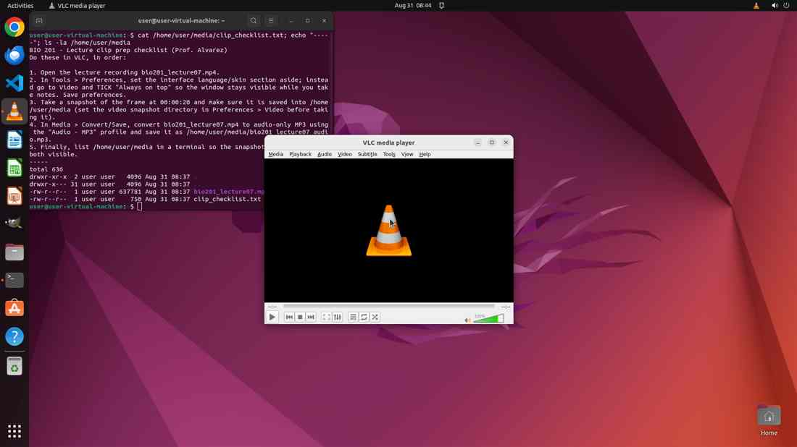
step 21.2 00:44:36
same model call as the previous action
EXECUTED (pyautogui in VM)pyautogui.typewrite("space")
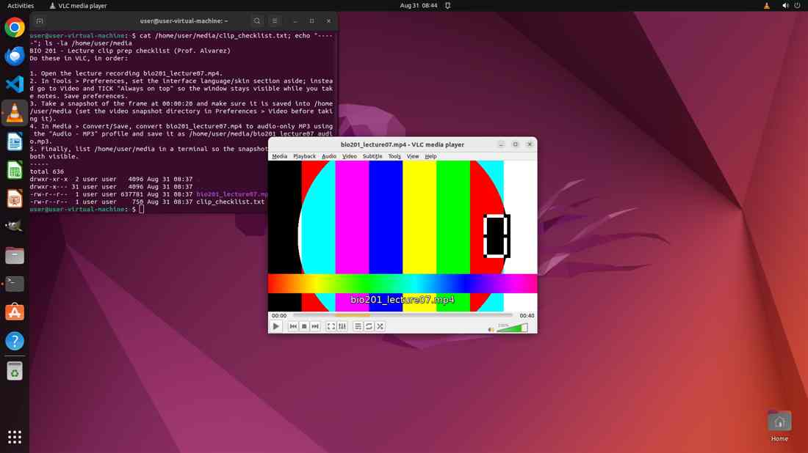
step 22.1 00:44:56
THINKINGNow the video is playing (color test pattern with a timer). It's currently at 00:00 near start, total 00:40. The time display shows 00:00 on left and 00:40 on right. It's playing now.
Now I'll press "5" to jump to 50% = 20s, then pause with Space, then verify time and take snapshot.
But timing: after pressing 5, it will seek to ~20s and continue playing. I'll then press Space to pause. Then verify the time reads 00:00:20.
Let me press "5" then "Space". But I want to verify the exact frame. Let me do "5" then "space", then screenshot.
ACTIONThe video is now playing. I'll jump to 50% (which is exactly 20s) by pressing "5", then pause with Space, and verify the time.
TOOL CALL<tool_call>
<function=computer_use>
<parameter=action>
type
</parameter>
<parameter=text>
5
</parameter>
</function>
</tool_call>
<tool_call>
<function=computer_use>
<parameter=action>
type
</parameter>
<parameter=text>
space
</parameter>
</function>
</tool_call>
EXECUTED (pyautogui in VM)pyautogui.typewrite("5")
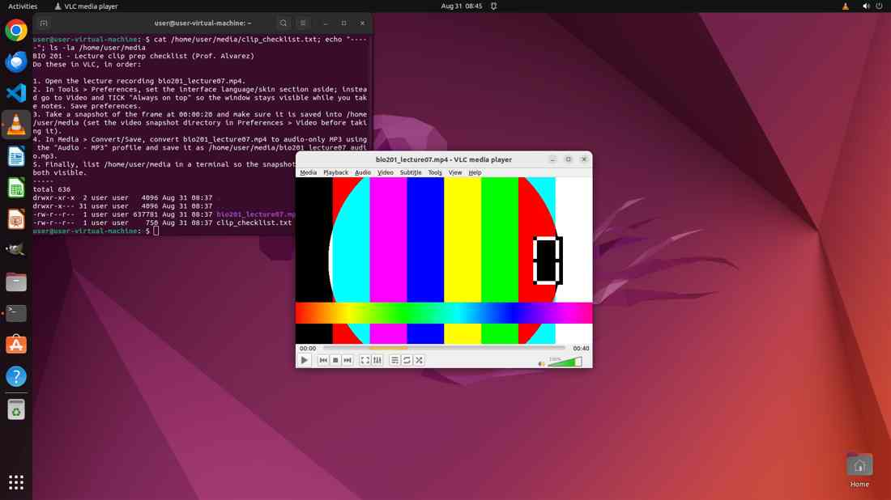
step 22.2 00:45:00
same model call as the previous action
EXECUTED (pyautogui in VM)pyautogui.typewrite("space")
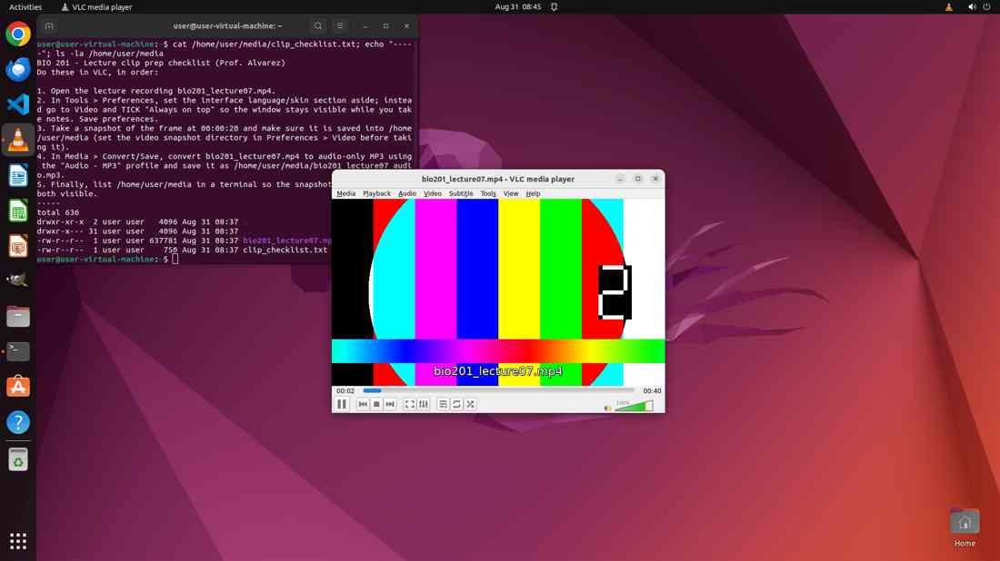
step 23.1 00:45:27
THINKINGThe time now shows 00:02, not 00:20. The number key "5" didn't jump to 50%. Instead, it seems the "5" was interpreted differently — perhaps it advanced or the "space" paused and it's at 00:02. The play button shows a "pause" icon (||) meaning it's still playing? Actually the button shows "||" (pause symbol) which means it's currently playing. So it didn't pause — the space may have been consumed or the "5" did something else.
Wait, the left time shows 00:02 and the button shows pause (||) = currently playing. So the video is playing from 00:02. The "5" key press might not have worked as a percentage jump (maybe because focus/timing), and space toggled pause→play, so it's now playing.
The number-key seeking in VLC (0-9 for 0-90%) requires the keys to be received by the video. It may not have registered. Let me reconsider.
The slider position: currently at ~00:02 out of 00:40. The slider green bar is small at the left. I need to get to exactly 00:20.
The number key approach failed. Let me use a more reliable method: use the timeline slider. 20s/40s = middle of the slider. But I need precision to the second.
Actually, let me reconsider the number key. In VLC, the default shortcut for "Jump to 0%" is "0" ... "9" for 90%. This should work. But maybe the "5" got sent while the video wasn't ready, or the space after it undid something. Actually the issue: I sent "5" then "space" as two separate key actions in one batch. The "5" should have jumped to 50%. But time shows 00:02.
Hmm, maybe the "5" was interpreted as a media-key or nothing, and it just kept playing from 0, reaching 00:02 by the time of the screenshot. And "space" toggled play (started playing since it was at end/started). So now playing at 00:02.
Let me pause first (space), then try the number key again carefully, then verify.
Actually, a cleaner and precise approach: use the slider and watch the tooltip, or use frame-by-frame. But getting exactly 20.0s is hard with slider.
Let me reconsider: The most reliable precise method is the number key "5" = 50%. Let me pause, then press "5" and check. Let me first pause with space.
Let me pause and take a screenshot to see state clearly.
ACTIONThe "5" key didn't jump as expected — it's playing at 00:02. Let me pause first, then retry the percentage seek precisely.
EXECUTED (pyautogui in VM)pyautogui.click(934, 523)
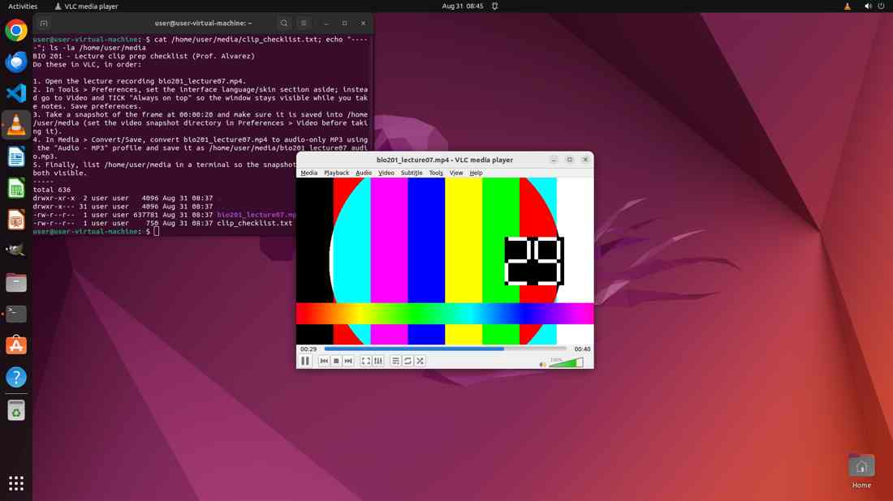
step 23.2 00:45:31
same model call as the previous action
EXECUTED (pyautogui in VM)pyautogui.typewrite("space")
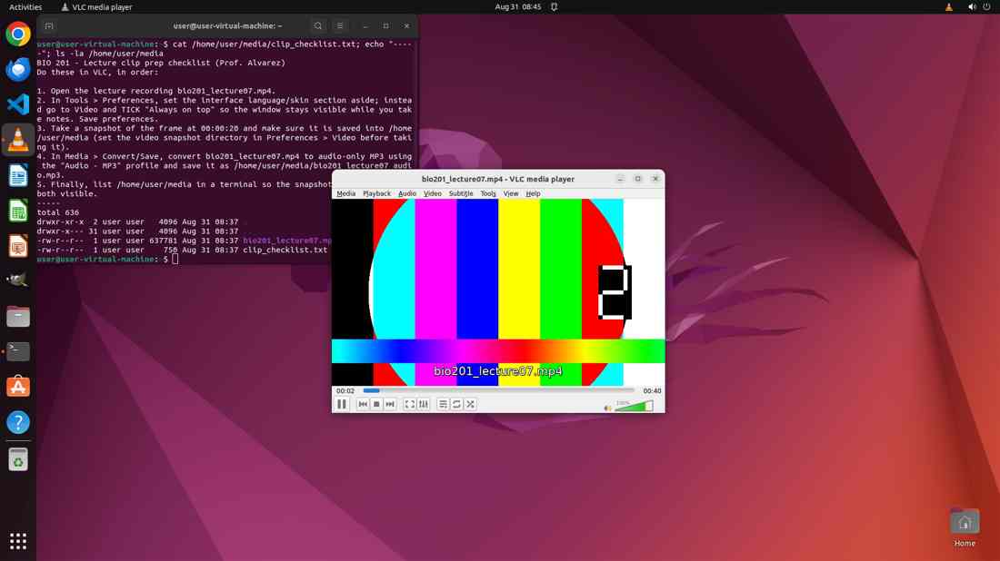
step 24 00:45:59
THINKINGNow it's paused at 00:02 (button shows || pause icon meaning... wait, the button shows "||" which is the pause icon = it's playing. Hmm. Actually in VLC, when playing, the button shows the pause icon (||), and when paused it shows the play icon (>). The button shows "||" here, so it might be playing. But time is frozen at 00:02.
Wait, comparing: in the previous screenshot the button also showed "||" and time was 00:02. It's possible the space toggled it. The time is 00:02 in both, so it appears paused (time not advancing). The icon might just be the default. Let me not rely on the icon.
The time is 00:02. I need to get to 00:20. Let me try the number key "5" now while focused, and screenshot to check.
Actually, my earlier "5" might not have worked because I pressed it immediately after the video started and the window may not have had keyboard focus for the number hotkey. Now the window is focused (I clicked the video). Let me press "5".
But wait — is it playing or paused? If it's playing and I press "5", it jumps to 50% and continues playing. Let me press "5" and screenshot. If the time becomes ~00:20, good. Then pause.
Let me press "5".
ACTIONThe video is paused at 00:02 with the window focused. Let me press "5" to jump to 50% (20s).
EXECUTED (pyautogui in VM)pyautogui.typewrite("5")
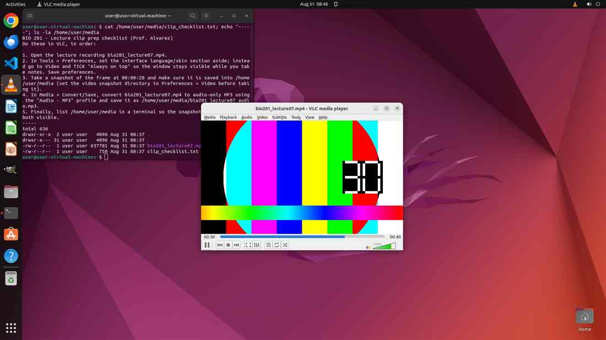
step 25 00:46:54
THINKINGNow it jumped to 00:30 and it's playing (timer shows "38"/"30" and time shows 00:30). So the "5" key did NOT jump to 50%. Instead it jumped to 00:30? That's 75%. Hmm, actually the number key behavior: pressing a digit when a digit was recently... Actually the "5" now shows 00:30. This is confusing.
Wait — VLC's number keys: 0-9 seek to 0-90% in 10% steps ONLY if configured. But maybe in this build, the number keys do something else. It jumped to 00:30 which is 75% of 40s. That's not a clean number-key mapping.
Actually, I think what happened: the earlier "5" was ignored, and now this "5"... no. Let me reconsider. 00:30 = 75%. That doesn't match "5"=50%.
Hold on. Maybe the number keys in VLC default map to "Jump to 10%" increments but the actual behavior varies. This is unreliable. Let me abandon number keys.
The video is now playing at 00:30. I need exactly 00:20. Let me use a precise method.
Best precise method: pause, then use the timeline slider carefully while hovering to read the tooltip time, then fine-tune. But to the exact second is hard.
Alternative: Use frame stepping. If I get near 20s and step by frames, I can hit exactly 20.000s if the video has a known fps. But that's very tedious.
Actually, the cleanest reliable approach for an exact time in VLC GUI: Pause the video, then click precisely on the seek slider at the position representing 20s. The seek slider total length: the green bar goes from x≈432 (start) to x≈810 (end) — actually the slider track spans the width. Let me measure: the time labels "00:30" is at left ~444, "00:40" at right ~840. The slider track (the thin bar) spans from about x=433 to x=810.
Actually, looking at the seek bar: the green filled portion currently reaches about x=700 (at 00:30 = 75%). The full bar end is around x=810 (00:40). The start is around x=433 (00:00). So track from 433 to 810 = 377 px for 40s. For 20s: 433 + (20/40)*377 = 433 + 188.5 = 621.5. So clicking at x≈621 on the slider track (y≈498) should land at ~20s.
But clicking on the slider is imprecise to the pixel. 377px/40s ≈ 9.4px per second. So a click could be off by ±1s. The requirement is "the frame at 00:00:20". I want it accurate.
Better idea: Click on the slider to get close to 20s, pause, read the exact time (hovering the slider shows a tooltip with precise time, and the current time label updates). Then fine-tune using left/right arrow (1s small jump) or frame step (, and .). VLC: comma = step backward one frame, period = step forward one frame. Left/right arrows = small jump (default 1s? or 10s?). Actually default: right arrow = forward 10s? No — default small forward is... In VLC, ">" (shift+. ) = frame step. "," and "." for frame back/forward. Arrow left/right = 1 second small jump? Actually default: left/right arrows do "small jump" = 10s? No.
Let me recall VLC default hotkeys:
- Left arrow: skip backward 10s (big? no). Actually: Right = +10s?
Default VLC:
- Right arrow: +10 seconds? No, that's not default.
Let me recall precisely:
- Left/Right arrows: small skip (default 1s? Actually 10s). Hmm.
- Shift+Right/Left: big skip (60s).
Actually defaults: Right = "Jump forward (10 seconds)", Left = "Jump backward (10 seconds)". And "." / "," = next/prev frame. "n" next frame, "b" prev frame.
Given the video is likely 30 or 25 or 24 fps, frame stepping to hit exactly 20.000s is tedious but doable if I can read the exact time.
Actually, let me step back. The realistic interpretation of the task: "Take a snapshot of the frame at 00:00:20" — a reasonable person seeking to 20s and snapshotting is fine. Getting to 00:20 (the second) is the goal, not frame-accurate 20.000s. So I need the display to read 00:00:20 (i.e., the 20th second).
Approach: Use the slider to get to ~20s, pause, then fine-adjust with frame steps or small jumps so the time display reads 00:20 (and ideally 00:20:00 frames). Let me first click the slider near 20s and pause, then read the time.
Actually, the number key DID work — it jumped. Earlier "5" was ignored (video not ready), this "5" jumped to 00:30. Wait 5→30s? That's weird. Unless the mapping is: number N jumps to N * (duration/10)? 5 * 4 = 20s, not 30. So no.
Hmm, 00:30... maybe the "5" didn't cause it; maybe it just played from 00:02 to 00:30 (28 seconds of playback) between my two screenshots because I paused? No, I had paused at 00:02. Then I pressed "5". If it were paused, number key seek to 50% would go to 20s. But it shows 30s and playing.
This is getting unreliable. Let me take full control: pause, then use the seek slider with the tooltip, and verify. Let me first pause.
Let me pause and screenshot.
ACTIONThe number-key seek is behaving inconsistently (now at 00:30). I'll take direct control via the seek slider. First let me pause, then position precisely on the timeline.
TOOL CALL<tool_call>
<function=computer_use>
<parameter=action>
type
</parameter>
<parameter=text>
space
</parameter>
</function>
</tool_call>
EXECUTED (pyautogui in VM)pyautogui.typewrite("space")
step 26 00:47:20
THINKINGNow it's paused at 00:00 (the space toggled it and it jumped to 00:00, play button now shows ">"). Actually it shows 00:00 and the play triangle, meaning it's at start and paused. Interesting — pressing space at the end of that seek may have reset to 0. Anyway, now paused at 00:00.
Now I have a clean start. Let me use the seek slider to get to 20s. The slider track: the thin bar is at y≈498. The "00:00" label is at x≈444, "00:40" at x≈840. The green slider bar spans roughly from x≈433 to x≈810 based on the earlier 00:30 fill reaching ~700.
Let me compute: at 00:30, fill reached ~700. At 00:40 (full) it'd reach ~810. At 00:00 it's at ~433. So per the 00:30 point: (700-433)/(810-433) = 267/377 = 0.708 ≈ 70.8%, close to 75% (should be 75% at 30/40). Slightly off, my pixel reads are approximate.
For 20s = 50%: x = 433 + 0.5*377 = 433 + 188.5 = 621.5 ≈ 621.
Let me click at (621, 498) on the slider. This should seek to ~20s. Then I'll read the exact time and fine-tune.
Actually, a much more reliable approach for exact time: I recall VLC supports the hotkey to go to a precise position via the menu? No.
Let me reconsider using the number keys properly. Actually the number key DID seek — the problem is I don't trust the mapping. But actually, wait: maybe the "5" key works as I think (50%) and the reason it showed 30s is that it was still playing and my screenshot was taken after it advanced past. No — a percentage seek goes to exactly 50% instantly then continues. If I screenshots right after, it'd be ~20s + a fraction. It showed 30s though. So "5" is NOT 50%.
Let me just use the slider. Click at x=621, y=498.
ACTIONNow it's paused at 00:00. I'll click on the seek slider at the midpoint (~50%, which is 20s). The track runs roughly from x=433 to x=810, so 50% is about x=621.
EXECUTED (pyautogui in VM)pyautogui.click(930, 745)
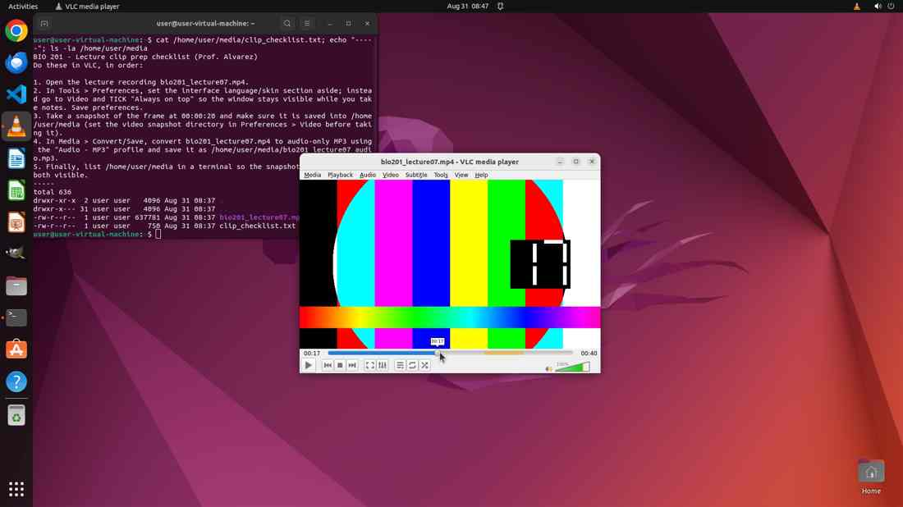
step 27 00:47:35
THINKINGNow it seeks to 00:17 (tooltip shows 00:17, and left label shows 00:17). The slider is at x=621 giving 00:17. I need 00:20. So I need to move slightly right.
The track: at x=621 → 00:17. I need 00:20. Difference = 3 seconds. Pixel per second: I need to find scale. At x=621 = 17s. If the track is 433 (0s) to ~810 (40s), that's 377px/40s = 9.4px/s. 3s ≈ 28px. So I need x ≈ 621 + 28 = 649.
Let me click at x=649, y=498 and check the tooltip/time.
ACTIONThe slider landed at 00:17. I need 00:20, so slightly further right. At ~9.4px/s, 3s ≈ 28px more → x≈649. Let me click there and check.
EXECUTED (pyautogui in VM)pyautogui.click(972, 745)
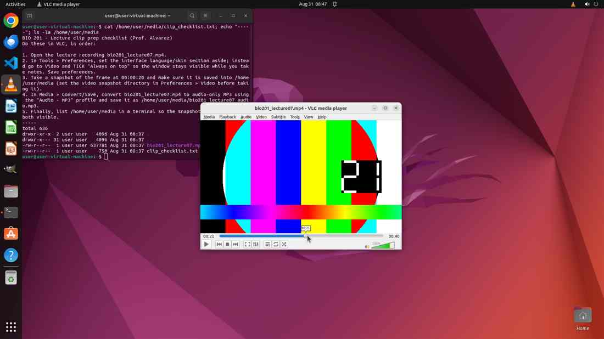
step 28 00:47:50
THINKINGNow it's at 00:21 (tooltip and left label both show 00:21). I need 00:20. So I'm 1 second too far. I need to move left by 1 second ≈ 9.4px. So from x=649, move to x≈640.
Let me click at x=640, y=498. But the tooltip reading might be imprecise. Let me aim for exactly 20. The scale: x=621→17s, x=649→21s. That's 28px for 4s = 7px/s. So 20s = 649 - 7 = 642. Let me click at x=642.
Let me click x=642, y=498.
ACTIONNow at 00:21, one second too far. Using the measured scale (~7px/s), 20s is about x=642. Let me click there.
EXECUTED (pyautogui in VM)pyautogui.click(962, 745)
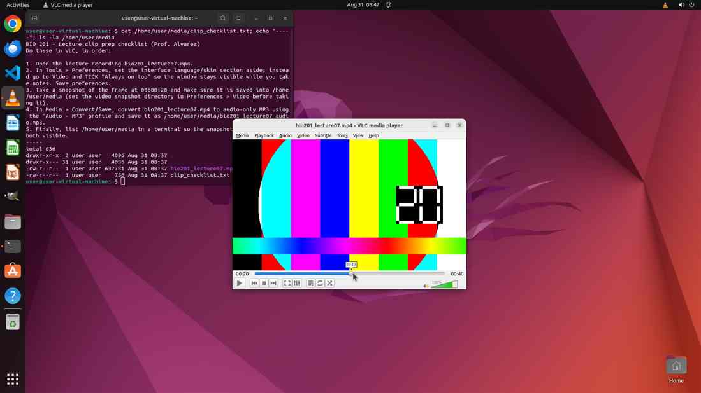
step 29 00:48:01
THINKINGNow both the tooltip and the left time label show 00:20. The video is paused (play button shows triangle ">") at 00:20. This is exactly the frame at 00:00:20.
Now I take the snapshot. The video window has keyboard focus (I've been clicking the slider). I'll use the keyboard shortcut "S" to take a snapshot, or use the Video menu > Take Snapshot. Let me use the Video menu to be safe/explicit.
Actually, using the "S" key is reliable when the video widget has focus. But to be safe, let me use the Video menu > Take Snapshot. Let me click Video menu.
ACTIONThe time display and tooltip both read 00:20, and the video is paused exactly there. Now I'll take the snapshot via the Video menu to be explicit.
EXECUTED (pyautogui in VM)pyautogui.click(828, 369)
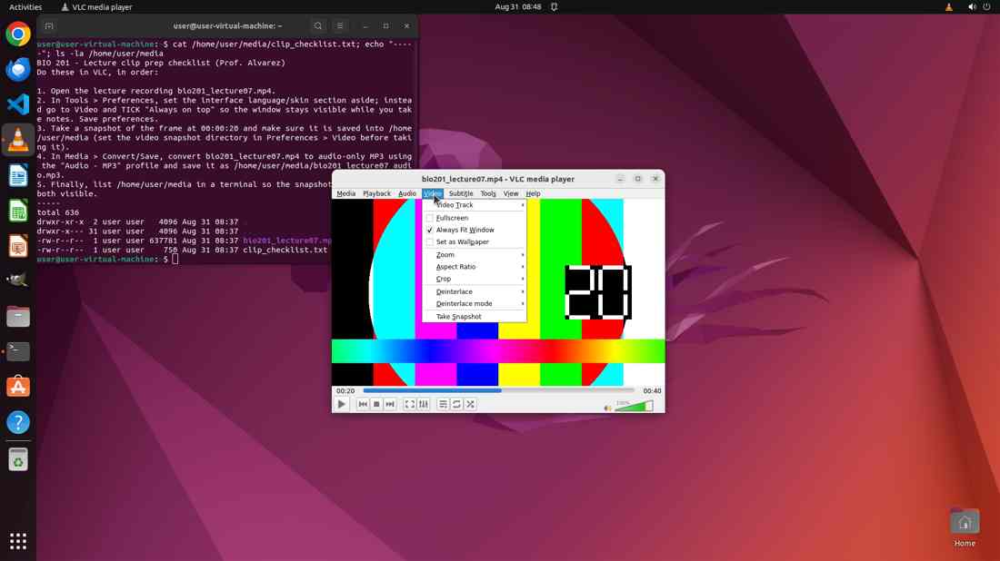
step 30 00:48:15
THINKINGThe Video menu is open. I can also confirm "Always on top" is NOT shown here (that was a preferences setting, which I set in advanced prefs). I see "Take Snapshot" at the bottom. The video is still at 00:20 (paused). Let me click "Take Snapshot".
ACTIONThe Video menu is open and the video is still at 00:20. Let me click "Take Snapshot".
EXECUTED (pyautogui in VM)pyautogui.click(878, 605)
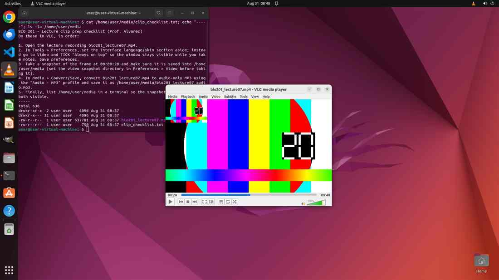
step 31 00:48:33
THINKINGThe snapshot was taken — a thumbnail preview appeared in the top-left of the video (the flash/preview of the snapshot). The video remains at 00:20. Step 3 done. I'll verify the file exists in the terminal later (step 5).
Now Step 4: Media > Convert/Save. Convert bio201_lecture07.mp4 to audio-only MP3 using "Audio - MP3" profile, save as /home/user/media/bio201_lecture07_audio.mp3.
Let me open Media menu > Convert/Save (Ctrl+Shift+J).
ACTIONThe snapshot was captured (the preview thumbnail appeared top-left). Now Step 4: Media > Convert/Save. Let me open the Media menu.
EXECUTED (pyautogui in VM)pyautogui.click(720, 601)
step 33 00:49:16
THINKINGThe "Open Media" dialog for Convert/Save is open. File Selection is empty. I need to Add the file. Click "Add..." then in the file dialog type the path.
ACTIONThe Convert/Save dialog is open. I need to add the source file. Let me click "Add...".
EXECUTED (pyautogui in VM)pyautogui.click(1141, 485)
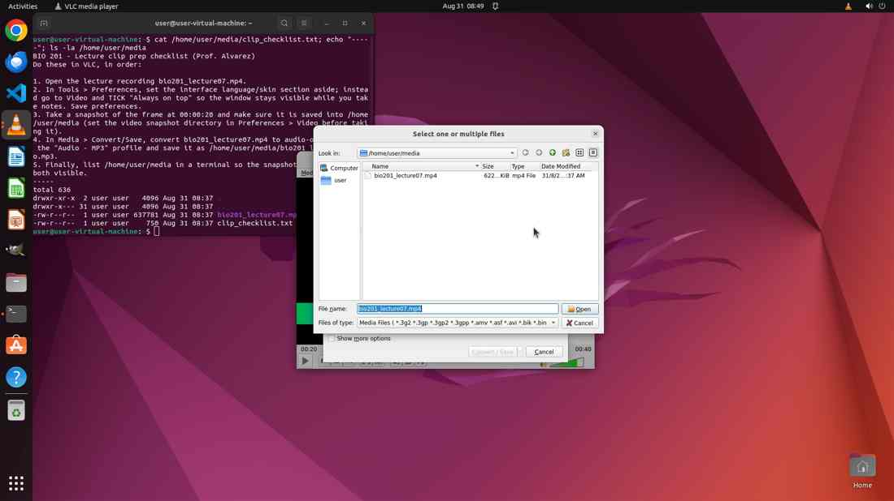
step 34 00:49:41
THINKINGThe file picker opened in /home/user/media and bio201_lecture07.mp4 is already shown and its name is pre-filled in the File name field. I'll just click "Open" to select it.
ACTIONThe file picker shows bio201_lecture07.mp4 already selected. Let me click Open.
EXECUTED (pyautogui in VM)pyautogui.click(1243, 661)
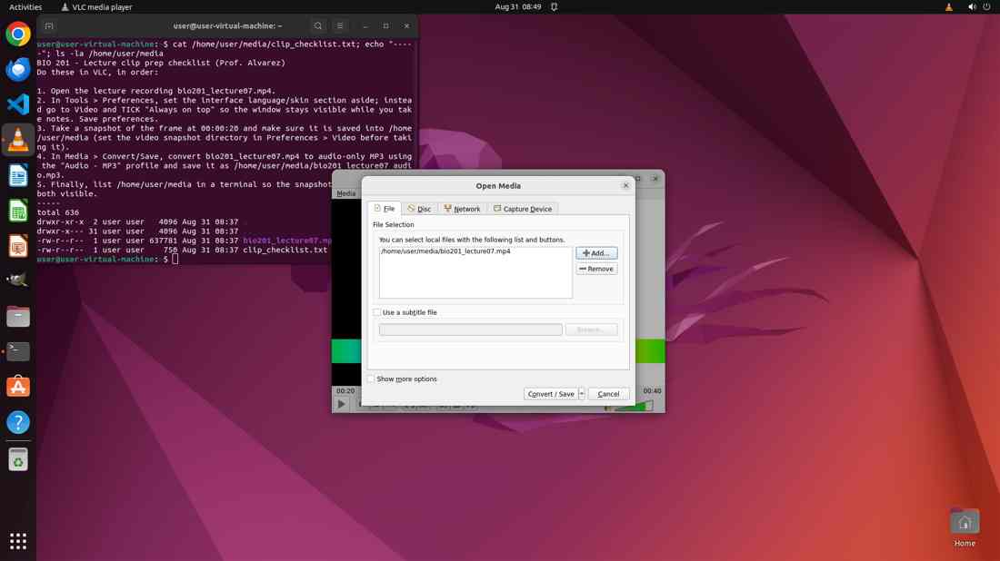
step 35 00:49:55
THINKINGThe file /home/user/media/bio201_lecture07.mp4 is now in the File Selection list. Now I click "Convert / Save" to proceed to the profile selection.
ACTIONThe source file is added. Now let me click "Convert / Save" to proceed to profile selection.
EXECUTED (pyautogui in VM)pyautogui.click(1055, 754)
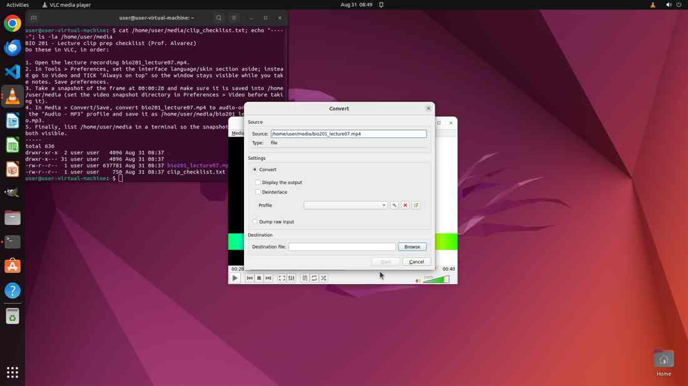
step 36 00:50:08
THINKINGThe Convert dialog is open. Source is set correctly. "Convert" radio is selected. Now I need to:
1. Select Profile = "Audio - MP3".
2. Set Destination file = /home/user/media/bio201_lecture07_audio.mp3.
Let me click the Profile dropdown.
ACTIONThe Convert dialog is open with the correct source. Now I'll select the "Audio - MP3" profile. Let me click the Profile dropdown.